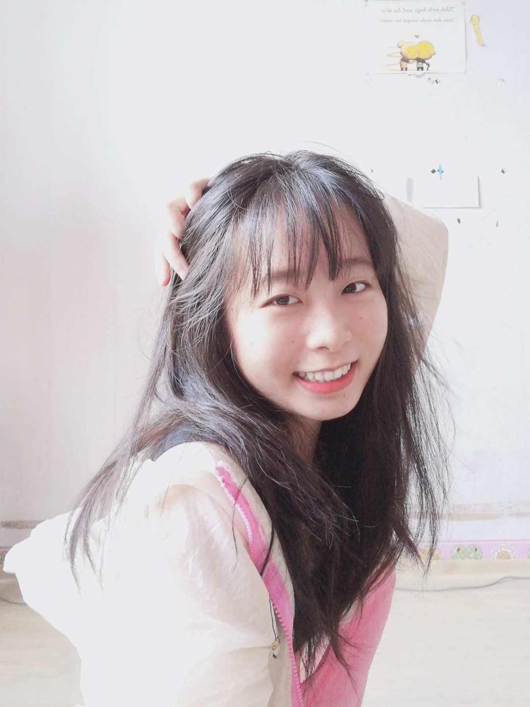
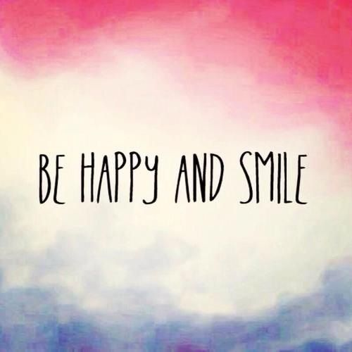

| Home Page About Family Future Plans Gallery |
|  |  |
| Now, I will talk about myself. My name is Ling Siew Siew born on 14 November 2001 which mean i'm 20 years old this year but not official yet because haven't November yet.I have mix blood which is Chinese mix Iban.I can speak both of the language!My race is Chinese but because of my parents have been divorced around 7-8 years so my mom change me race to Iban because I follow my mom. I'm from Bintulu,born in Bintulu and lived in Bintulu. |
In 2019 June I got an offer Politeknik Mukah take Diploma Teknologi Maklumat(Teknologi Digital) trek software and development. Now I'm in semester 4, the activities and clubs I have join is only with Society Of IT students(SITS) and join the activities they provide such as green carnival and so on. |
About my past is my kindergarden was at Tadika Pin Pin in Bintulu.My primary school was at SJK(C) Chung Hua Bintulu while my high school was at SMK Bintulu. |
What need to know about me..Mostly,my attitude is based on how others treat me and just don't messed up with me when I'm trying been nice. |